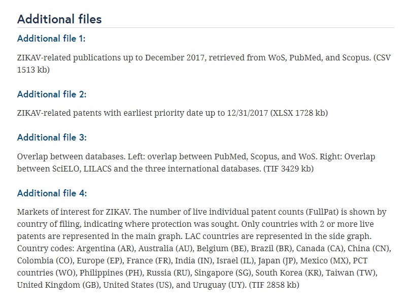
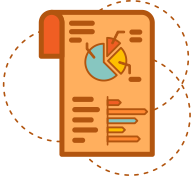
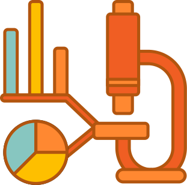

Podem incluir, por exemplo, estatísticas, coleções de imagens digitais, gravações sonoras, transcrições de entrevistas, dados de pesquisa e observações de campo com anotações apropriadas, interpretação, obras de arte, arquivos, objetos encontrados, textos publicados ou um manuscrito.
Série 3 | Curso 2
Dados Abertos
Aula 1
Gestão, compartilhamento e abertura de dados para pesquisa: uma nova cultura no fazer científico
Seja bem-vindo ao curso sobre Dados Abertos! Aqui você poderá aprender sobre o que é, seu uso e importância. Aproveite o conteúdo e desejamos a você bons estudos!
Introdução aos Dados Abertos
Historicamente no campo científico, a comunicação entre pesquisadores prioriza o formato de artigo, elaborado com a intenção de ser amplamente difundidos entre os pares, enquanto os dados coletados e gerados em atividades de pesquisa permaneceram privados. Ou seja, a possibilidade de acesso e reutilização de dados estava limitada aos membros de um grupo de pesquisa ou de um laboratório que registram e armazenam dados em cadernos de laboratório, mídias digitais ou computadores pessoais. Estes profissionais eram responsáveis pela gestão de dados a partir de lógicas internas do grupo que não necessariamente vislumbravam o seu compartilhamento com públicos específicos ou a sua ampla difusão.
Os dados têm grande valor informacional para todas as áreas de ensino e pesquisa e que, portanto, devem integrar a comunicação científica como meio de promover o avanço da ciência. Dessa forma, inovações orientadas a dados vem surgindo, tais como a sua disponibilização como material suplementar em artigos científicos, os repositórios de dados, os artigos de dados (data papers), entre outros.
Dados como material suplementar:
No artigo que você pode conferir aqui os autores realizam uma análise cientométrica e de redes sociais para avaliar como os novos conhecimentos de C&T produzidos e disseminados regionalmente sobre o zika vírus podem contribuir para enfrentar os desafios globais da saúde.

Eles recuperaram publicações das bases de dados Web of Science, Scopus e PubMed, SciELO e LILACS e registros de patentes via Orbit Intelligence e o Derwent Innovation. Os registros de cada banco de dados foram baixados, integrados, padronizados e analisados individualmente.
Na imagem ao lado podemos ver a seção “arquivos adicionais” ou Additional Files, os autores disponibilizaram imagens que sintetizam suas conclusões e tabelas com os dados subjacentes.
Entenda mais um pouco sobre dados clicando nos botões abaixo:

Repositórios de dados
São infraestruturas que reúnem, descrevem e promovem o acesso e a preservação a longo prazo de conjuntos de dados. Eles podem se institucionais ou temáticos, ligados a comunidades disciplinares ou projetos de pesquisa. Aprofundaremos esse ponto na aula 6.

Data paper
(artigo de dados)
Os data journals (periódico de dados) são publicações regulares, com sistema de revisão por pares, concebidas para compartilhar dados com potencial de reuso por terceiros. Eles publicam data papers (artigos de dados) nos quais os autores compartilham dados brutos de maneira estruturada e legível para humanos.
Geralmente, os artigos de dados não apresentam seções de análise e conclusões. Seu diferencial é tornar pública a metodologia de coleta de dados (software adotados, descrição do seu processamento, formato, estrutura, além de informações sobre seu potencial de reutilização e o link para o repositório de dados nos quais eles podem ser acessados.
Universo de dados e um novo vocabulário
Se é possível ter um consenso é de que o dado é um primeiro nível de abstração sobre o qual produzimos informação e conhecimento, na prática, cada área do conhecimento coleta ou produz diferentes tipos de dados, com diferentes naturezas e potenciais para compartilhamento e abertura. Clique abaixo para aprender ainda mais:
Mas e o que são os “Dados Abertos”?
A expressão “dados abertos” como síntese de um campo de inovações da Ciência Aberta pode passar a falsa impressão de que, a partir de agora, a comunidade científica transitaria de uma “cultura do segredo” para a abertura total das atividades de pesquisa. Esta percepção é equivocada, pois existem diversas situações na qual a abertura de dados não deve ser efetivada. Por exemplo, quando a pesquisa é de interesse estratégico para instituições, lida com questões de segurança nacional, precisa atender a cláusulas contratuais que impedem sua publicação ou trabalham com dados sensíveis e pessoais. Para saber mais sobre proteção de dados, segurança da informação, você pode fazer o curso “Direito de Acesso à Informação e Proteção de Dados Pessoais” , que compõe a Séria Marcos Legais da formação em Ciência Aberta.
Segundo o Open Data Institute (ODI), fundado por Tim-Berners Lee, “os dados existem em um espectro” que varia de fechado, passa pelo compartilhado até chegar ao aberto.
Mas o que de fato são os dados abertos? Siga em frente e entenda.
O que é dado aberto?
Dados abertos são dados que podem ser livremente usados, reutilizados e redistribuídos por qualquer pessoa - sujeitos, no máximo, à exigência de atribuição da fonte e compartilhamento pelas mesmas regras.
A definição de dados abertos se baseia na noção de “conhecimento aberto” (open definition) que, por sua vez, visa “promover [o conhecimento] como um bem comum robusto no qual qualquer um pode participar, e a interoperabilidade é maximizada” (REF). Há diversas condições a serem atendidas para considerar um conhecimento aberto, destacando-se:
Disponibilidade e acesso
Os dados devem estar disponíveis integralmente, a um custo razoável de reprodução, de preferência através de download pela Internet. Os dados também devem estar disponíveis em formato conveniente e modificável.
Reutilização e redistribuição
Os dados devem adotar licenças que permitam a reutilização e redistribuição, incluindo a sua combinação com outros conjuntos de dados.
Participação universal
Todos devem poder usar, reutilizar e redistribuir os dados. Não deve haver discriminação contra áreas de atuação, finalidade ou contra pessoas ou grupos. Esta perspectiva desencoraja inclusive restrições ao uso "comercial".
Dados fechados
Contrastando com os dados abertos, os dados fechados são aqueles que não podem ser livremente usados, reutilizados e redistribuídos por qualquer pessoa porque foram aplicadas cláusulas de segredo/sigilo. É importante destacar que o sigilo é temporal e seus prazos devem ser considerados em políticas de abertura de dados.
Em algumas situações, é possível promover um primeiro nível de abertura de dados através da disponibilização dos metadados que os descrevem. Assim, uma pessoa pode saber da existência dos dados ainda que não possa acessá-los diretamente. Outra opção de acesso e reuso de dados se dá através de espaços controlados que exigem autorização e atendimento de condições muito específicas. Esse é o caso, por exemplo, da pesquisa em bases governamentais do Ministério da Saúde, viabilizado pelo Cidacs. Saiba mais sobre os tipos de dados ao lado:
Dados embargados
“Dados embargados” é uma expressão que se refere a conjunto de dados que estão depositados em um repositório, mas cujo acesso e reuso está não está disponível por um período predeterminado. Este é um mecanismo aceito por financiadores de pesquisa e revistas científicas para garantir a prioridade do autor no seu uso e análise. Geralmente, o período de embargo é de seis meses a um ano.
Dados compartilhados
“Os dados compartilhados” são aqueles cujo acesso, reuso e redistribuição estão limitados a determinadas pessoas ou grupos. Seja através do estabelecimento de convênios entre instituições, seja por conta de uma relação de confiança entre pesquisadores que colaboram informalmente. Tais acordos costumam determinar as condições de uso, especialmente em relação a possibilidade de exploração comercial e a atribuição de autoria.
O vídeo “Open, shared and closed”, produzido pela Open Data Institute (ODI), sintetiza as diferenças entre os dados abertos, compartilhados e fechados, clique abaixo para assistir:
Vídeo 1 - Open / Shared / Closed: The world of data
Fonte: Open Data Institute.
Mas afinal de contas, o que são dados no âmbito da pesquisa?
Existem muitas definições sobre dados no âmbito da pesquisa e cada uma delas expressa visões, direções e preferências. Segundo o documento “Concordat for Open Research” desenvolvido por um grupo multissetorial do Reino Unido (ANO):
National Institutes of Health (NIH, Estados Unidos)
Material factual registrado comumente aceito na comunidade científica como necessário para documentar e apoiar os resultados da pesquisa. Não se refere às estatísticas ou tabelas resumidas; pelo contrário, se refere aos dados nos quais as estatísticas e tabelas de resumo são baseadas. Para os fins desta política [NIH Data Sharing Policy], os dados finais de pesquisa não incluem cadernos de laboratório, conjuntos de dados parciais, análises preliminares, rascunhos de artigos científicos, planos para pesquisas futuras, relatórios de revisão por pares, comunicações com colegas ou objetos físicos, como géis ou amostras de laboratório.
NIH (2003, s.p, tradução nossa)
Organização para a Cooperação e Desenvolvimento Econômico (OCDE)
Registros factuais usados como fonte primária para a pesquisa científica e que são comumente aceitos pelos pesquisadores como necessário para validar os resultados do trabalho científico.
OCDE (2007, p. 13, tradução nossa)
A Fiocruz
A Fiocruz adotou a expressão “dado para pesquisa” em sua política institucional, considerando que o termo “dado de pesquisa” remete prioritariamente as atividades realizadas por pesquisadores em seus grupos de pesquisa, alocados em instituições formais de ensino e pesquisa. Esta definição desconsidera outros tipos de dados produzidos no âmbito da administração pública e que são igualmente importantes para o avanço do conhecimento.
Nesse sentido, a expressão “dados para pesquisa” busca ser mais abrangente e promover a gestão ativa de dados em um conjunto mais amplo de atividades da administração pública. Vislumbra-se que os dados geridos de forma ativa preservam seu valor informacional, transformando-os em ativos institucionais estratégicos que favorecem a sustentabilidade institucional, processos de transparência pública e reuso por diversos setores da sociedade.

Saiba mais:
“Os dados da pesquisa são as evidências que sustentam a resposta das perguntas de pesquisa e podem ser usados para validar os resultados, independentemente de sua forma (por exemplo, impressa, digital ou física). Estas podem ser informações quantitativas ou declarações qualitativas coletadas por pesquisadores no decorrer de seu trabalho por experimentação, observação, modelagem, entrevista ou outros métodos, ou informações derivadas de evidências existentes. Os dados podem ser brutos ou primários (por exemplo, diretos de medição ou coleta) ou derivados de dados primários para análise ou interpretação subsequente (por exemplo, dados já limpos ou um extrato de um conjunto maior de dados) ou derivados de fontes existentes, onde os direitos podem ser mantidos por outros. Os dados podem ser definidos como componentes "relacionais" ou "funcionais" da pesquisa, sinalizando assim que sua identificação e valor estão em se e como os pesquisadores os utilizam como evidência para as alegações. Eles podem incluir, por exemplo, estatísticas, coleções de imagens digitais, gravações sonoras, transcrições de entrevistas, dados de pesquisas e observações de campo com anotações apropriadas, uma interpretação, uma obra de arte, arquivos, objetos encontrados, textos publicados ou um manuscrito. O objetivo principal dos dados de pesquisa é fornecer as informações necessárias para apoiar ou validar as observações, descobertas ou resultados de um projeto de pesquisa.
UK MULTI-STAKEHOLDER GROUP ( 2016, p. 3, tradução nossa).

Dados para pesquisa, segundo a sua natureza
Os repositórios podem ser classificados como: Governamentais, Agregadores, Temáticos ou Institucionais. Veja abaixo mais detalhes sobre cada um deles:
-
Dados observacionais
São os dados obtidos por meio da observação direta de um fenômeno que aconteceu em um local e momento específico e que, portanto, não podem ser coletados novamente. Essas características promovem sua importância histórica na medida em que são ocorrências únicas e insubstituíveis. Por isso, especial atenção deve ser dada a sua preservação. Exemplos: Imagens cerebrais, os dados de inquéritos.
-
Dados computacionais ou de simulação
São dados gerados a partir da execução de simulações ou de modelos computacionais. Na física de altas partículas, por exemplo, a realização de um experimento mobiliza centenas de pesquisadores que, distribuídos em laboratórios geograficamente dispersos, configuram dezenas de sensores, software e hardware. Outras aplicações são os modelos climáticos; etc
-
Dados experimentais
São dados provenientes de experimentos, geralmente realizados no ambiente controlado e protocolizado de um laboratório. Ex. uma reação química, cromatogramas, microensaios.
-
Dados governamentais
São dados produzidos nas atividades correntes de instituições da administração pública e que, apesar de não terem sido criados ou coletados com o objetivo de pesquisa, podem subsidiar estudos importantes, especialmente no que se refere a normas técnicas e políticas públicas.
Conclusão
Nesse curso você observou sobre como é importante conhecermos os principais conceitos sobre dados para pesquisa para adotarmos uma gestão ativa de dados, tendo como perspectiva o seu compartilhamento e abertura.
Agora, você concluiu essa aula e esperamos vê-lo em breve na aula 2. Bom trabalho!